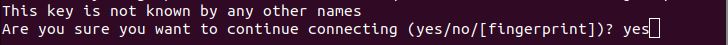

Communiceren met de Raspberry Pi en achteraf wifi instellen
In dit hoofdstuk leer je hoe je de Raspberry Pi kan gebruiken. Het moet een verinding met het Internet hebben, zodat je nieuwe programma's kan downloaden. Je kan met de Raspberry Pi praten met een USB-toetsenbord en een monitor met een HDMI-aansluiting, bijvoorbeeld een TV. Maar je kan ook praten met de Raspberry Pi via je laptop. Ook kan je later je wifi instellen.
Inhoud
- Communiceren met de Raspberry Pi en achteraf wifi instellen
- Wat heb je nodig
- Wat ga je doen
- Stap 1: Stop het SD-kaartje in de Raspberry Pi
- Stap 2 - Sluit de adapter aan op de Raspberry Pi, zodat hij stroom krijgt
- Stap 3 - Gebruik een andere computer om verbinding te maken met de Raspberry Pi via SSH
- Stap 4 - Later wifi instellen
- Stap 5 - Gebruik speciale bevelen om dingen te doen met de Raspberry Pi
- Samenvatting
Wat heb je nodig
Om een Raspberry Pi te gebruiken, heb je het volgende nodig:
- Een Raspberry Pi 3B+ computer.
- Een klaargemaakt micro SD-kaartje voor de Raspberry Pi, dit is in het vorige hoofdstuk besproken.
- Een adapter om stroom aan de Raspberry Pi te geven.
Als je later wifi wilt instellen dan heb je ook nodig:
- De naam van je wifi-netwerk.
- Het wachtwoord van je wifi-netwerk.
- Een scherm met HDMI aansluiting, zoals een TV of de UCtronics 7 Inch touchscreen.
- Een USB-toetsenbord US met muis,
om te typen op de Raspberry Pi.
Wat ga je doen
Stap 1: Stop het SD-kaartje in de Raspberry Pi.
Stap 2: Sluit de adapter aan op de Raspberry Pi, zodat hij stroom krijgt.
Stap 3: Gebruik een andere computer om verbinding te maken met de Raspberry Pi via SSH.
Stap 4: Later wifi instellen.
Stap 1: Stop het SD-kaartje in de Raspberry Pi

Om een micro SD-kaartje te gebruiken in een Raspberry Pi 3B+, volg je deze stappen:
| Stap | Actie |
|---|---|
| 1 | Zoek de SD-kaartlezer op de Raspberry Pi. Dit is een kleine rechthoekige opening links in het midden van de Raspberry Pi. |
| 2 | Neem het micro SD-kaartje en kijk naar beide kanten. Er zal op één kant tekst staan. |
| 3 | Houd het kaartje met de kant met de tekst naar beneden gericht en stop het in de SD-kaartlezer. |
| 4 | Duw het kaartje zachtjes in de kaartlezer totdat het op zijn plaats zit. |
| 5 | Als je het kaartje wilt verwijderen, trek je het kaartje naar buiten. |
Stap 2 - Sluit de adapter aan op de Raspberry Pi, zodat hij stroom krijgt
Om de Raspberry Pi 3B+ te laten werken, moet je eerst de stroomadapter aansluiten op de micro USB-aansluiting aan de linkerkant onderaan het bord. Vervolgens moet je de stekker van de adapter in het stopcontact steken.
Als je een monitor en een toetsenbord hebt aangesloten dan zal je op het scherm zien dat de Raspberry Pi aan het opstarten is. Uiteindelijk zal het systeem je vragen om een gebruikersnaam in te voeren. Voer de gebruikersnaam "ubuntu" in en druk op de Enter-toets.
Stap 3 - Gebruik een andere computer om verbinding te maken met de Raspberry Pi via SSH
Om verbinding te maken met een Raspberry Pi vanuit een andere computer met SSH, heb je eerst een aantal dingen nodig:
De Raspberry Pi moet aan het stroomnetwerk zijn aangesloten en aan staan.
Je moet weten wat het IP-adres is van de Raspberry Pi. Dit is een uniek nummer dat aan elke computer en elk apparaat op het internet of wifi is toegewezen.
Je moet ook weten wat het gebruikersnaam en wachtwoord zijn voor de Raspberry Pi. In het vorige hoofdstuk heb je 'ubuntu' als gebruikersnaam opgegeven met als wachtwoord dat je opgeschreven hebt tijdens het maken van het micro SD kaartje.
Je moet op de andere computer een programma hebben geïnstalleerd dat SSH ondersteunt, zoals PuTTY (voor Windows) of Terminal (voor MacOS en Linux).
Gebruik de volgende stappen volgen om een verbinding te maken met de Raspberry Pi vanuit een andere computer.

Je hebt het ip-adres van de Raspberry Pi nodig om een SSH verbinding met de Raspberry Pi te maken. Het makkelijkste is om de app Fling op je smartphone te instaleren. Zoek 'ubuntu' op, de naam die je gegeven hebt aan de Raspberry Pi in het vorige hoofdstuk. Je ziet dan bijvoorbeeld staan:
ubuntu
192.168.2.49| Stap | Actie |
|---|---|
| 1 | Open met Ctrl + Alt + T een terminal sessie voor de Mac of de laptop die je bij de CoderDojo wordt gebruikt. |
| 2 | Voer het commando ssh ubuntu@IP_adres_Raspberry_Pi in in het programma. Bijvoorbeeld ssh ubuntu@192.168.2.49. |
| 3 | Typ: yes. $\\$ |
| 4 | Vul de naam en het wachtwoord in die je gebruikt voor je Raspberry Pi. Als alles goed is gegaan, dan moet je nu verbonden zijn met de Raspberry Pi vanaf een andere computer. Dan kan je opdrachten geven aan de Raspberry Pi en bestanden uitwisselen tussen de twee computers. |
| 5 | Als je windows gebruikt, dan moet je een programma genaamd Putty installeren. Met dat programma kan je een verbinding maken. |
| 5 | Met een Chromebook ga je naar Linux door op het volgende symbool te klikken: $\\$ |
Stap 4 - Later wifi instellen
Als de Raspberry Pi nog niet aangesloten is op het internet, dan kan je er alleen mee werken als je een toetsenbord en een beeldscherm met een HDMI kabel hebt.
- De USB-poorten zitten aan de rechterkant van het Raspberry Pi 3B+ bord. Daar sluit je het toetsenbord aan.
- De HDMI-poort is de grote connector onderaan in het midden van het bord. Daar sluit je de monitor of TV aan.
- De poort die helemaal links onderaan zit, is voor je adapter om stroom te geven.
Het systeem zal je vragen om een gebruikersnaam. Typ "ubuntu" en druk op de knop Enter. Dan zal het systeem vragen of je het wachtwoord wilt veranderen. Typ eerst het oude wachtwoord "ubuntu" en daarna je nieuwe geheim woord. Druk op de knop Enter om te bevestigen dat je het geheim woord hebt veranderd. Noteer het wachtwoord op een papiertje.
Om de Raspberry Pi opnieuw te laten beginnen, geef je het volgende opdracht:
sudo reboot- Druk op de knop Enter om het opdracht te laten werken.
De plek waar je op werkt wordt de "terminal" genoemd.
50-cloud-init.yaml
# This file is generated from information provided by
# the datasource. Changes to it will not persist across an instance.
# To disable cloud-init's network configuration capabilities, write a file
# /etc/cloud/cloud.cfg.d/99-disable-network-config.cfg with the following:
# network: {config: disabled}
network:
version: 2
ethernets:
eth0:
optional: true
dhcp4: true
# add wifi setup information here ...
wifis:
wlan0:
optional: true
access-points:
"Je wifi netwerknaam (SSID)":
password: "Je wifi wachtwoord"
dhcp4: trueAls je een .yml-bestand maakt, moet je ervoor zorgen dat je tekst er netjes uitziet. Je moet bijvoorbeeld goed opletten hoe je tekst begint en hoeveel spaties je gebruikt. Het is belangrijk om geen tab te gebruiken, maar in plaats daarvan spaties te gebruiken om de tekst te laten inspringen.
Stap 5 - Gebruik speciale bevelen om dingen te doen met de Raspberry Pi
De terminal is een programma op je computer waarmee je speciale opdrachten kunt geven aan de computer. Bijvoorbeeld als je een bestand wilt downloaden via wifi.
Ubuntu is een speciaal computer programma dat helpt om met je computer te werken en om programma's te gebruiken. Soms komen er nieuwe versies van programma's of worden er fouten in programma's opgelost. Als je Ubuntu gebruikt, kan het handig zijn om deze nieuwe versies te installeren of om fouten te repareren. Je kan dit doen door een opdracht te geven aan Ubuntu met hulp van de terminal:
# nieuwste versies van alle programma's installeren of bijwerken
sudo apt update && sudo apt full-upgrade
# Raspberry Pi opnieuw opstarten met de nieuwste versies
sudo rebootsudo apt full-upgrade laat Ubuntu de nieuwste versies van alle programma's installeren of bijwerken. Dit is vergelijkbaar met sudo apt upgrade, maar apt full-upgrade is beter om te gebruiken als er afhankelijkheden zijn. Dit betekent dat als een nieuwe versie van een programma afhankelijk is van een ander programma, apt full-upgrade ervoor zorgt dat het andere programma ook geïnstalleerd of bijgewerkt wordt. Het kan ook programma's verwijderen die niet meer nodig zijn en nieuwe programma's toevoegen om aan de afhankelijkheden van de nieuwe programma's te voldoen.
We gebruiken vaak het programma "Nano" om bestanden te maken of te veranderen. Als je dit opdrachtje intypt in de terminal en op Enter drukt, dan kan je het bestand openen om aan te passen: sudo nano /etc/netplan/50-cloud-init.yaml.
sudo nano /etc/netplan/50-cloud-init.yamlOm wifi te laten werken, moet je de juiste informatie invullen in een bestand genaamd 50-cloud-init.yaml, zie hiervoor het voorbeeld in 50-cloud-init.yaml. Helaas moet je alles zelf typen. (later als je een verbinding maakt met de Raspberry Pi vanuit je eigen computer, kunnen je de "kopieer-plak" commando's gebruiken.) Let er wel op dat je niet de tab-toets gebruikt, maar in plaats daarvan twee of vier spaties intypt.
Samenvatting
In dit hoofdstuk wordt uitgelegd hoe je de Raspberry Pi kunt gebruiken en verbinden met het internet om nieuwe programma's te downloaden. Om de Raspberry Pi te gebruiken, heb je een USB-toetsenbord en een monitor met een HDMI-aansluiting of een laptop nodig. Ook leer je hoe je later de wifi op de Raspberry Pi kunt instellen. De stappen om de Raspberry Pi te gebruiken zijn als volgt: stop het micro SD-kaartje in de Raspberry Pi, sluit de adapter voor stroom aan op de Raspberry Pi en maak verbinding met de Raspberry Pi vanaf een andere computer via SSH. Om verbinding te maken met de Raspberry Pi vanaf een andere computer, moet je het IP-adres van de Raspberry Pi kennen en de gebruikersnaam en het wachtwoord dat je hebt opgegeven tijdens het maken van het micro SD-kaartje. Je hebt ook een programma nodig dat SSH ondersteunt, zoals PuTTY of Terminal. Door deze stappen te volgen, kun je de Raspberry Pi gebruiken en met andere computers verbinden.